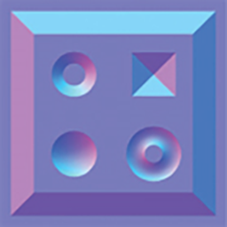
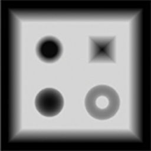

Exploring bump mapping with WebGL
04-Mar-2017
No bump mapping
Normal mapping
Parallax mapping
Steep parallax mapping
Parallax occlusion mapping
Show diffuse texture
| Parallax scale [0, 0.1] | |
| Number of steps [1, 32] |
Bump mapping is a collective term for a number of techniques used in graphics to simulate meso-features - features which aren't large enough to be necessarily represented by geometry, and aren't small enough to be represented by a shading model. These techniques allow us to add details without adding geometry.
This blog post is an attempt to study bump mapping techniques and implement a WebGL demo to compare and visualize them. We will not be looking at displacement mapping techniques, which rely on adding/manipulating geometry to the shaded surface. We will discuss four techniques: Normal mapping, parallax mapping, steep parallax mapping and parallax occlusion mapping.
The WebGL demo is built using a single JavaScript file. Shader code is at the bottom of the page. The diffuse map, normal map and the depth map were taken from learnopengl.com and are licensed CC BY 4.0.
{kind=link}
{kind=link}
{kind=link}
Each face of the cube below is a simple square made up of two triangles. The detail is added using bump mapping. You can click on the cube to pause its rotation, and play around with the controls below to visualize the various techniques and their parameters.
Contents
Normal Mapping
 Normal mapping is probably the most widely used bump mapping technique, and readers even casually associated with graphics will have worked with normal maps at some point. In the WebGL demo above, all four of the bump mapping techniques use normal mapping; the parallax shaders just add extra math on top.
Lighting at a point on a surface varies with the angle of incidence, which is the angle between the incoming light ray and the surface normal. If we modify the surface normal, the lighting at the given point also changes. Normal mapping relies on this property and uses a texture to store surface normals.
The red, green and blue channels are used to encode the normal's vector components along the X, Y, and Z axes. Since these components can be negative, a channel value of 128 is considered to be zero. Anything below this is negative, and anything above this is positive. e.g. a color RGB (128, 128, 255) denotes a unit vector pointing in the positive Z direction, i.e. the vector \(0\bar{i} + 0\bar{j} + 1\bar{k}\).
One problem with this approach is that these surface normals stored in the texture cannot be represented in world space. If they are, then the normals would change every time the normal-mapped object is rotated, and the texture would have to be updated. Moreover, multiple objects with the same meso-features, but with differing geometry and orientations would not be able to share the same normal map.
This problem is solved by storing the objects in tangent space instead of in world space. To achieve this, we use a concept called the change of basis.
Any 3D coordinate space is defined by its three basis vectors. Any given vector in this space can be uniquely represented as a linear combination of these basis vectors. For example, the vector (1, 2, 3) is actually the result of \(1\bar{i} + 2\bar{j} + 3\bar{k}\), and the vectors \(\bar{i}, \bar{j}\) and \(\bar{k}\) are called the basis vectors.
In world space, the basis vectors are simply the X, Y and Z axes. This is called the standard basis.
While choosing the basis vectors for the tangent space, we want them to be unperturbed by the changes in orientation of the mesh in world space. In other words, these basis vectors should "stick" to the mesh. The three basis vectors that are chosen are called the tangent, the bitangent, and the normal.
The tangent at each vertex is the partial derivative of the UV texture coordinate with respect to the \(u\) component. This means that the tangent points in the direction of change of \(u\) at that vertex. The bitangent is similar, but points in the direction of change of the \(v\) component.
These tangents and bitangents are stored in model space - the coordinate space where the object is located at the origin and has unit scale and zero rotation. In the vertex shader, the tangent and the bitangent vectors are transformed into world space using the inverse transpose of the model-view matrix. Normals and the Inverse Transpose by Nathan Reed
These tangent and bitangent basis vectors are usually computed for each vertex when a mesh is loaded, and are stored in the vertex buffers. In this example, I am not doing this via computation, but am directly storing tangents and bitangents via hard-coded arrays, for the sake of simplicity.
In the vertex shader, once we have the tangent and the bitangent vectors in world space, we can simply take a cross-product to get the normal in world space at that vertex. An important thing to note is that the tangent and the bitangent vectors may not necessarily be perpendicular to each other, depending on the the mesh and its UV map.
Once we have the tangent \((T_x, T_y, T_z)\), bitangent \((B_x, B_y, B_z)\) and normal \((N_x, N_y, N_z)\) vectors in world space, we can construct a matrix to change the basis of a vector between the two spaces as required.
The following matrix multiplication allows us to "move" a tangent-space vector \(V (V_x, V_y, V_z)\) to world space: \[ V_{world\ space} = \begin{pmatrix} T_x & B_y & N_x \\ T_y & B_y & N_y \\ T_z & B_z & N_z \end{pmatrix} \begin{pmatrix} V_x \\ V_y \\ V_z \end{pmatrix} \tag{a} \]
The inverse of this matrix can be used to do the opposite change of basis, i.e. conversion of a world-space vector into tangent space. Since our test mesh is a uniformly texture-mapped cube, the tangent and the bitangent are perpendicular at each vertex, and hence this matrix is an orthogonal matrix, and so its inverse is equal to its transpose. We take advantage of this fact, since the transpose is far cheaper to compute than the inverse. Thus for a world-space vector \(V (V_x, V_y, V_z)\): \[ V_{tangent\ space} = \begin{pmatrix} T_x & T_y & T_z \\ B_x & B_y & B_z \\ N_x & N_y & N_z \end{pmatrix} \begin{pmatrix} V_x \\ V_y \\ V_z \end{pmatrix} \tag{b} \]
If your meshes do have texture shearing, the tangents and the bitangents will not be perfectly orthogonal. In this case, in order to get fully correct lighting, you will have to compute the proper inverse of the matrix inside the vertex shader instead of using the relatively cheaper transpose operation shown above.
Now that we can change basis at will, we can proceed with the lighting calculations.
Our light positions are defined in world space, while our surface normals are in tangent space. We need to bring both of these things into the same space to calculate the lighting. We could follow two different approaches here:
- Convert the surface normals to world space
- Convert the lights, camera and fragment positions to tangent-space
If we follow approach 1, we will have to perform the matrix multiplication in equation (a) for each fragment in order to convert normals to world space.
If we follow approach 2, we will have to perform the matrix multiplication in equation (b) for each vertex. We will need to convert all the light positions (this demo only has one), and other vectors such as the fragment position and the view position from world space to tangent space. We only need to do this in the vertex shader, since the transformed vectors can be interpolated over the fragments, and hence this approach is usually cheaper than the first approach. We follow this approach in the demo.
Once everything is in the tangent space, the angle of incidence can be computed along with its cosine, and the Lambertian lighting in the demo can be evaluated as usual.
Parallax mapping
 In reality, bumps will obscure the area behind them, and this behaviour will change depending upon the viewing angle. For instance, this blocking effect will be negligible if you view the surface head-on, and the effect will be very apparent as your angle of viewing increases.
While normal mapping does a good job of appropriately simulating lighting, it does not simulate this obscuring parallax effect at all. Regardless of the normal map, the position of the sampled texel is never changed, and the texture is simply uniformly mapped over the surface.
Parallax mapping techniques remedy this shortcoming by modifying the texel coordinates based on a depth map before any further lighting calculations are done. This way, the bumpiness of the surface perturbs the texture mapped on to it.
In the diagrams below, a cross-section of the parallax-mapped surface is shown. The eye represents the camera, the top-most horizontal line represents the surface. The area below the surface represents a "virtual" area, with increasing depth as you go down. The curve represents a topology described by the depth map. Note that the depth map is simply an image mapped flatly onto the surface, and that the curve is a visual representation of the topology that it describes. The point of intersection of the view ray and the surface denotes the fragment that the shader is running on.
As described before, we will have to perturb the texture coordinates sampled at any point depending on the depth of the surface. With simple normal mapping, the texel sampled will be the one located at the current fragment. We will alter this coordinate by \(\Delta\text{uv}\) to get a parallax effect.
The ideal value of \(\Delta\text{uv}\) relies on finding the precise location of the intersection of the depth field and the view ray, making it a ray-tracing problem.
Simple parallax mapping does a first-order approximation by calculating \(\Delta\text{uv}\) as follows: \[ \Delta\text{uv} = \frac{h \cdot v_{xy}}{v_z} \tag{c} \]
Here, \(h\) is the value of the depth map sampled at the fragment, and $v$ is the normalized view direction (a.k.a. view ray). There is a variant of this technique with offset limiting, which reduces the amount of drift that occurs at oblique view angles: \[ \Delta\text{uv} = h \cdot v_{xy} \tag{d} \]
These approximations make the shader fast, but they are extremely crude, and lead to obviously incorrect results at oblique view angles and larger depth scales, which you can see in the WebGL demo.
Steep parallax mapping
Steep parallax mapping does a more accurate ray intersection calculation than the previous approach. It does so by breaking down the depth space into a number of equal layers (controlled by the steps slider in the demo above). We step through each depth layer along the view ray, moving from the surface towards increasing depth.
At each step, we check whether the current layer depth is greater than the value of the depth map sampled at that step. If it is greater, then it means that we are "inside" the depth field. We select the first such point found, and derive the \(\Delta\text{uv}\) based on this point.
This technique is thus a linear search along the depth space. A greater step count leads to a better visual result at the cost of shader clock cycles. The number of steps can be adaptively determined based on the view angle - steps increasing with the obliqueness of the view direction. The performance gained from this adaptive step count will vary greatly because of shader divergence resulting from variations in the view direction vector depending on the shaded geometry, the projection parameters, and the position of the camera. The demo doesn't have this adaptive step count.
Parallax occlusion mapping
Steep parallax mapping results in stair-stepping artefacts for smaller step counts. This happens because neighboring ray intersections resolve to the same depth layer, since we only take the depth at the first layer at which the intersection occurred.
Parallax Occlusion Mapping (POM) fixes this by taking an additional depth texture sample from the layer before the intersection happened. Now we have two depths - the depth at the layer after the intersection, and the depth at the layer before the intersection. We do a lerp between these values to get a better approximation of the point intersection. Read the shader code below to get a clearer idea of these calculations.
This technique assumes that between two layers, the curvature of depth map can be approximated as straight lines. This assumption holds true for sufficiently large step counts, and gives a good visual result.
Further reading
- I was inspired to study and write this because of the great book Real-Time Rendering, which has a short section on bump mapping.
- learnopengl.com and sunandblackcat.com have good beginner-friendly writeups with code samples.
- The parallax techniques discussed above work well with flat surfaces, but may cause artifacts with curved meshes. It may be possible to analytically compensate for mesh curvature, as discussed very briefly in this Unreal Engine 4 video.
- The original paper for parallax mapping by Tomomichi Kaneko can be found here.
- The original paper for steep parallax mapping by Morgan McGuire and Max McGuire can be found here.
- An in-depth slide deck about parallax occlusion mapping by Natalya Tatarchuk can be found here.
Closing notes
The JavaScript file behind this demo, and the shader code at the bottom of this post are public domain. Feel free to use them however you want.
If you have comments, suggestions, corrections or questions, feel free to get in touch with me on Twitter or email (links in the footer).
Shader source
Vertex Shader
precision highp float;
attribute vec3 vert_pos;
attribute vec3 vert_tang;
attribute vec3 vert_bitang;
attribute vec2 vert_uv;
uniform mat4 model_mtx;
uniform mat4 norm_mtx;
uniform mat4 proj_mtx;
varying vec2 frag_uv;
varying vec3 ts_light_pos; // Tangent space values
varying vec3 ts_view_pos; //
varying vec3 ts_frag_pos; //
mat3 transpose(in mat3 inMatrix)
{
vec3 i0 = inMatrix[0];
vec3 i1 = inMatrix[1];
vec3 i2 = inMatrix[2];
mat3 outMatrix = mat3(
vec3(i0.x, i1.x, i2.x),
vec3(i0.y, i1.y, i2.y),
vec3(i0.z, i1.z, i2.z)
);
return outMatrix;
}
void main(void)
{
gl_Position = proj_mtx * vec4(vert_pos, 1.0);
ts_frag_pos = vec3(model_mtx * vec4(vert_pos, 1.0));
vec3 vert_norm = cross(vert_bitang, vert_tang);
vec3 t = normalize(mat3(norm_mtx) * vert_tang);
vec3 b = normalize(mat3(norm_mtx) * vert_bitang);
vec3 n = normalize(mat3(norm_mtx) * vert_norm);
mat3 tbn = transpose(mat3(t, b, n));
vec3 light_pos = vec3(1, 2, 0);
ts_light_pos = tbn * light_pos;
// Our camera is always at the origin
ts_view_pos = tbn * vec3(0, 0, 0);
ts_frag_pos = tbn * ts_frag_pos;
frag_uv = vert_uv;
} Fragment Shader
precision highp float;
uniform sampler2D tex_norm;
uniform sampler2D tex_diffuse;
uniform sampler2D tex_depth;
/*
The type is controlled by the radio buttons below the canvas.
0 = No bump mapping
1 = Normal mapping
2 = Parallax mapping
3 = Steep parallax mapping
4 = Parallax occlusion mapping
*/
uniform int type;
uniform int show_tex;
uniform float depth_scale;
uniform float num_layers;
varying vec2 frag_uv;
varying vec3 ts_light_pos;
varying vec3 ts_view_pos;
varying vec3 ts_frag_pos;
vec2 parallax_uv(vec2 uv, vec3 view_dir)
{
if (type == 2) {
// Parallax mapping
float depth = texture2D(tex_depth, uv).r;
vec2 p = view_dir.xy * (depth * depth_scale) / view_dir.z;
return uv - p;
} else {
float layer_depth = 1.0 / num_layers;
float cur_layer_depth = 0.0;
vec2 delta_uv = view_dir.xy * depth_scale / (view_dir.z * num_layers);
vec2 cur_uv = uv;
float depth_from_tex = texture2D(tex_depth, cur_uv).r;
for (int i = 0; i < 32; i++) {
cur_layer_depth += layer_depth;
cur_uv -= delta_uv;
depth_from_tex = texture2D(tex_depth, cur_uv).r;
if (depth_from_tex < cur_layer_depth) {
break;
}
}
if (type == 3) {
// Steep parallax mapping
return cur_uv;
} else {
// Parallax occlusion mapping
vec2 prev_uv = cur_uv + delta_uv;
float next = depth_from_tex - cur_layer_depth;
float prev = texture2D(tex_depth, prev_uv).r - cur_layer_depth
+ layer_depth;
float weight = next / (next - prev);
return mix(cur_uv, prev_uv, weight);
}
}
}
void main(void)
{
vec3 light_dir = normalize(ts_light_pos - ts_frag_pos);
vec3 view_dir = normalize(ts_view_pos - ts_frag_pos);
// Only perturb the texture coordinates if a parallax technique is selected
vec2 uv = (type < 2) ? frag_uv : parallax_uv(frag_uv, view_dir);
vec3 albedo = texture2D(tex_diffuse, uv).rgb;
if (show_tex == 0) { albedo = vec3(1,1,1); }
vec3 ambient = 0.3 * albedo;
if (type == 0) {
// No bump mapping
vec3 norm = vec3(0,0,1);
float diffuse = max(dot(light_dir, norm), 0.0);
gl_FragColor = vec4(diffuse * albedo + ambient, 1.0);
} else {
// Normal mapping
vec3 norm = normalize(texture2D(tex_norm, uv).rgb * 2.0 - 1.0);
float diffuse = max(dot(light_dir, norm), 0.0);
gl_FragColor = vec4(diffuse * albedo + ambient, 1.0);
}
}